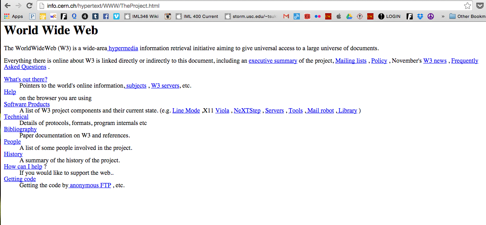

I found it interesting how Berners-Lee and his co-authors described the role of a W3 "client" as something that "displays an object" requested from the server—"and within a second the infomation, is presented." The language used in his description really reminded me of how we still discuss the function of Javascript. Also, I hardly ever think of the request function, that all of this HTML was essentially created just for the purpose of making it easier to request packets of information. And thanks to the development of user-interface today, requesting information has become effortless.
In describing what exactly the W3 stands for, Berners-Lee breaks down the components:

Berners-Lee was forward-looking when establishing the groundwork for the web and considered scalability of the web: "The fact that it is easy to address an object anywhere on the Internet is essential for the system to scale, and for the information space to be independent of the network and server topology"